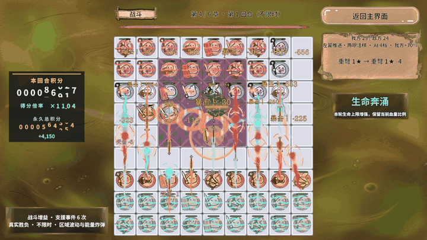

结论：泄漏修完了，低端机 80～90 帧还没过
| 环节 | 结论 | 依据 |
|---|---|---|
| 资源泄漏 | 已修复 | 返回大厅 24 → 14 包；DestroyGroup(Battle) + FlushUnused；三次往返采样断言通过 |
| 伤害出口 | 已统一 | DamageRequest → EvaluateDamage（纯计算）→ ResolveDamage（唯一提交） |
| GM 注册 | 单文件 | GameGmCommands.cs 为唯一注册处，运行时实查 63 条命令 |
| 低端机 80 / 90 帧 | 未验收 | 只有 Unity Editor 与 PC AB；无 Android 真机、无 GPU 精确耗时 |
六章均执行真实 PC AB，起始双方各 24 棋（共 48），棋盘随补子涨到 48～55 棋；保留远近程攻击、支援、眼位、区域波动、能量炸弹与反馈特效。夹具会加大生命并每秒续航，避免负载被打死后变成空场测试。
环境：Unity 2022.3.15f1c1 / Windows 11 / i7-12700H（20 逻辑核）/ 约 16GB RAM / Intel Iris Xe 核显（共享内存）/ DX11 / 1920×1080。不是 8GB 独显；使用桌面编辑器，前后台、Profiler 窗口与其它桌面负载未完全隔离，也没有独立 Player 或 Android 真机结果。
六章帧率与卡顿分布
固定种子 1025 + 章号，每章准备完成后预热 2 秒，正常采样 12 秒。Profiler 关闭期间以真实墙钟逐帧采样，之后单独短录 Profiler。VSync 暂设 0、targetFrameRate = -1，finally 恢复原值 1 / -1。CSV 记录本身也有开销。
| 章 | 基线 FPS | 最终 FPS | P50 ms | P95 ms | P99 ms | 存活棋子 | 攻击事件 |
|---|---|---|---|---|---|---|---|
| 1 | 165.3 | 71.2 | 11.69 | 28.78 | 47.37 | 48–53 | 2623 |
| 2 | 155.0 | 99.2 | 8.83 | 17.91 | 30.51 | 50–55 | 2866 |
| 3 | 162.2 | 89.4 | 9.53 | 21.07 | 32.52 | 50–55 | 3230 |
| 4 | 66.4 | 60.9 | 14.71 | 30.11 | 43.51 | 48–53 | 2958 |
| 5 | 70.9 | 69.4 | 12.75 | 26.08 | 46.51 | 48–53 | 2677 |
| 6 | 88.0 | 85.5 | 10.43 | 20.84 | 33.68 | 50–55 | 2918 |
稳定 90 帧要求约 11.11ms 帧预算，80 帧约 12.5ms；应看 P95 / P99，不能只看平均 FPS。最终每章都至少 40 棋、40 次攻击，并核对退出回收。基线、中间轮与最终轮的原始 JSON / CSV 都在采样数据包里，不挑最高帧率做结论。
第 1 章基线 165.3 掉到 71.2，不代表第 1 章变慢：基线轮跑的是更轻的夹具版本，两者负载不同，这一列只用于对照同一章内部的变化方向，不作为跨章比较。
主线程热点：视图与 UI 成本不可忽略
表内为主线程标记的每帧平均 inclusive 毫秒，父子包含关系不能相加；EditorLoop 属于编辑器，不是手机游戏逻辑。Profiler 采样与正常 FPS 采样时间窗不同，二者不能相减推算 GPU 时间。
| 章 | Main | PlayerLoop | EditorLoop | Camera.Render | UGUI 批重建 | Board.LateUpdate | DOTween | RevTimer |
|---|---|---|---|---|---|---|---|---|
| 1 | 12.448 | 6.369 | 5.707 | 1.820 | 1.024 | 0.968 | 0.625 | 0.544 |
| 2 | 12.415 | 6.562 | 5.482 | 1.795 | 0.953 | 0.859 | 0.620 | 0.557 |
| 3 | 12.332 | 6.684 | 5.267 | 1.994 | 1.079 | 0.944 | 0.640 | 0.575 |
| 4 | 18.278 | 9.423 | 8.410 | 2.402 | 1.574 | 1.514 | 0.871 | 0.922 |
| 5 | 18.366 | 9.671 | 8.244 | 2.462 | 1.405 | 1.795 | 0.850 | 1.175 |
| 6 | 13.228 | 7.150 | 5.684 | 2.072 | 1.179 | 1.018 | 0.709 | 0.663 |
最终第四章 raw 共 74 帧：主线程 18.278ms，PlayerLoop 9.423ms，EditorLoop 8.410ms；渲染线程等待主线程命令 6.748ms，Camera.Render 提交 2.202ms。等待不是 GPU 执行时间，也不支持"顺手加个 AI 线程"。主线程 GC.Alloc 元数据合计平均 17,507 字节/帧（含 Editor 与工具分配，不是纯玩法分配），仍需 Player 分配调用栈定位。
多颗棋子通过同一个固定步驱动（0.3125 秒），不为每颗棋子新增 Update 或协程。高频预算优先投入 BoardView 的文字避让与反馈排队、DOTween 动画、Canvas 重建与透明渲染；不能仅凭棋子多就改成线程并行——Unity 视图仍在主线程，AI 试算保持独立快照与占格版本规则。
- 已保留：同帧同位置 / 缩放的飘字矩形缓存，避免新文字反复查询 Renderer.bounds 和投影；透明度不变时不重复写 5 份 TextMesh 颜色。
- 已保留：积分滚筒未变化的高位不重复写 RectTransform。
- 已撤销：积分区子 Canvas。第四章同场交替 off / on 两组，UGUI 平均 off 约 2.140ms、on 约 2.327ms，没有证据支持收益，最终代码不启用。
| HUD 诊断段 | UGUI 批重建 inclusive |
|---|---|
| 0-canvas-off | 1.5501 ms |
| 1-canvas-on | 2.3524 ms |
| 2-canvas-off | 2.7296 ms |
| 3-canvas-on | 2.3008 ms |
缓存减少重复工作有明确代码路径依据，但当前桌面采样无法建立可靠的总帧率提升比例；不宣称零 GC。后续手机优化需先拆分文字布局 / 播放 / 回收标记，再分别记录 CPU 帧、GPU 帧、GC 分配与功耗。
原始录制在 Profiler 原始录制 里，Unity Profiler 中 Load 对应 raw 查看。有一次第四章只产生 4 字节空 raw，未计作有效 CPU 证据，改用有界补采加有效帧断言。
Draw Call、合批与内存
| 章 | Draw Call | SetPass | 动态批 | 实例批 | 分配峰值 MB | 保留峰值 MB | Mono 峰值 MB |
|---|---|---|---|---|---|---|---|
| 1 | 64.2 | 52.3 | 30.7 | 0.0 | 613.9 | 1109.1 | 656.2 |
| 2 | 64.4 | 52.7 | 30.2 | 0.0 | 638.0 | 1130.9 | 667.8 |
| 3 | 64.8 | 53.0 | 30.3 | 0.0 | 632.6 | 1121.9 | 679.8 |
| 4 | 64.4 | 52.7 | 30.8 | 0.0 | 643.9 | 1126.9 | 684.9 |
| 5 | 65.4 | 53.6 | 30.4 | 0.0 | 600.3 | 1081.9 | 685.1 |
| 6 | 64.3 | 52.7 | 30.2 | 0.0 | 602.7 | 1079.9 | 685.9 |
动态合批有实际计数；GPU 实例化批次为 0。不能把 Shader 里写了 instancing 关键字当成实例化生效。共享材质与图集已沿用，透明排序、不同材质或 Shader、字体与 UI 层次仍限制合批。Draw Call 不随本轮优化显著下降，也不能据此推断 GPU 便宜——覆盖面积、片元复杂度与透明叠加仍可能昂贵。
内存是 Unity Editor 进程相关的 Profiler 计数，包含编辑器、资源与采样开销，不能当手机常驻内存。各列分别取峰值、统计域不同，不应相加；Mono 值也不能从总分配列直接相减。本轮验证的是资源引用与包生命周期回归，不等于已证明所有内存泄漏消失。
Frame Debugger 独立暂停帧导出 46 个事件，包含透明几何与 UGUI 覆盖层；这是事件层级清单，不等于持续负载的 Draw Call，也不构成逐材质诊断。GPU 精确耗时未形成有效证据：FrameTiming / GPU 模块不可用或为 0 时记为缺失，不把 CPU 提交耗时称为 GPU 时间。
AB 按需加载与真正卸载
| 阶段 | 原基线 | 最终实现 |
|---|---|---|
| 首页 | 14 | 14 |
| 六章战斗末 | 24 | 24 |
| 返回大厅 | 24 | 14 |
两条泄漏链已修复。① 冷加载池请求原来未归还临时引用，进出次数越多引用越高；GamePoolRequests 只组合 RevResManager 与 RevPool 的公开门面，缓存命中直接取池，冷加载交付后归还临时引用。② RevScene 清空闲实例不会销毁池本身；退出战斗且视图已归还后，显式 DestroyGroup(Battle)，再 FlushUnused 卸掉零引用包。战斗面板使用 DestroyOnClose，全程不 force 卸仍被引用的共享包。
章节背景新图接管后释放旧租约，等待销毁落地，在交接点清理闲置包；不逐帧执行 UnloadUnusedAssets。返回大厅的 14 个包里有空名称的 Unity 内部包，以及菜单 / 字体 / 数据 / 共享材质和被菜单真实依赖的图集——它们不是战斗独占残留，不能为追求包数为 0 去破坏首页。
最终返回大厅时的实际包名
伤害统一出口与 GM 单文件注册
DamageRequest → EvaluateDamage（纯计算）→ ResolveDamage（唯一提交）。普攻、Boss 技能、最大 / 当前生命比例与固定伤害都走同一套最终减伤、护盾、扣血、眼位复活、计分与死亡链。AI 斩杀预测复用纯计算，不消费暴击随机数、不扣盾、不派发事件；能靠眼位复活的棋子不会被误判成永久击杀。Boss 技能保留原独立倍率语义，没有借重构偷偷加难度。
GameGmCommands.cs 是全部 RevGame GM 的唯一注册文件；Bootstrap 只调用 RegisterAll / UnregisterAll，运行时实查 63 条命令。注册账本保证重复注册幂等、异常回滚与完整注销，包括旧 Boss 命令。新增玩家操作复用正式业务或 GamePointerInput 链，保留遮挡、禁用与阶段限制；诊断造局与玩家操作有明确标识。
| 玩家操作 | GM 入口 |
|---|---|
| 首页 / 选关 / 进入 / 返回 | 打开选关、进入战斗、返回主界面、返回选关首页 |
| 选牌 / 落子 / 换位 | 选牌、落子、点格子、点棋盘 |
| 眼石 / 刷新 / 开战 | 选择眼石、刷新手牌、开始战斗 |
| 射程长按 / 收起 | 攻击范围、收起攻击范围 |
| 结算 / 奖励 / 跳过 | 下一回合、选奖励、跳过 |
| 故障返回 / PvP / 退出 | 故障返回、玩家对战、退出游戏 |
| 可观察状态 | 玩家操作目录、流程状态、战斗状态、手牌、落点、奖励、棋子 |
PvP 按当前真实按钮行为显示未开放提示，不虚构在线对战。退出游戏会终止 Play / Player 进程，未为了覆盖率主动结束用户会话。截图 GM 改为可传证据目录，默认系统临时目录，不再拼 Application.dataPath。命令名静态清单与 63 条运行时目录都在采样数据包里。
验证、失败记录与边界
| 检查 | 结果与范围 |
|---|---|
| 规则与战术 | 741 条真实业务 + 745 条战术断言通过；伤害专项 49 条包含其中 |
| 眼位专项 | 177 条通过；已有中心棋后补成眼、破眼撤销等 |
| 积分规则 | 1149 条通过 |
| 真实 PC AB | 冷启动三次往返 5087 条、最终再次往返 3711 条采样断言通过；GM 注册/注销/恢复、手牌与图集非白图、准备增益与资源回收 |
| 积分 / 视觉 / 回收 | 222 条 Play 断言通过；滚筒数字有实际网格、伤害与积分一致、资源回收 |
| 六章压力 | 六章固定负载、真实攻击、CSV 与 PNG 齐全；最终 14 包且战斗专用包不残留 |
| 未测 | Android 低端机、发布 Player、GPU 精确耗时、热降频长跑、手机 80/90Hz 显示能力 |
失败都保留了边界：旧连击累计出现 1.9999999 导致整数截断少打一次，统一用 1e-6 算法容差取完整次数，玩家 / 敌兵 / Boss 共用；旧准备验收用固定 3250ms 墙钟猜模拟完成，改为有界观察实际 PreparationElapsed / Granted，冻结仍会超时失败；某次 Profiler 第四章只有 4 字节空 raw，未计作有效 CPU 证据，补采后新增有效帧断言；早期 Profiler UI 事件录制触发 Unity 原生崩溃，重启后关闭 UI / UIDetails 只保留 CPU / Rendering / Memory，仅附脱敏尾部。
真实画面与动态图
截图为各章采样结束时的实际画面；动图来自第四章 HUD 诊断的同场交战。图片证明"当时确实在跑这些表现"，数值是否达标以断言、采样数据和 Profiler 原始录制为准。



原始截图是 1920×1080 PNG，共 19.1MB；这里换成 1600 宽的 JPEG（合计 2.0MB），只做体积优化，没有裁剪、拼接或美化。
下一轮门禁：真机验收怎么算过
- 选实际低端 80Hz / 90Hz 设备，而不是再看桌面编辑器。
- Development Player 与发布包分别跑六章同一夹具，每章至少 60 秒。
- 连续跑 10 分钟到热稳定后再复测，记录温度与降频。
- 目标 80fps 看 P95 ≤ 12.5ms，90fps 看 P95 ≤ 11.11ms，同时记录 P99、CPU / GPU 时间、GC bytes/frame 与资源往返。
- GPU 超预算 → 按实测配置背景片元复杂度与透明层级；CPU 超预算 → 切分文字布局 / 动画 / Canvas 热点。
任何情况下都不能破坏同帧致死、补子、换位与气眼刷新这些正确性约束；也不靠减棋子、关特效来制造达标数字。